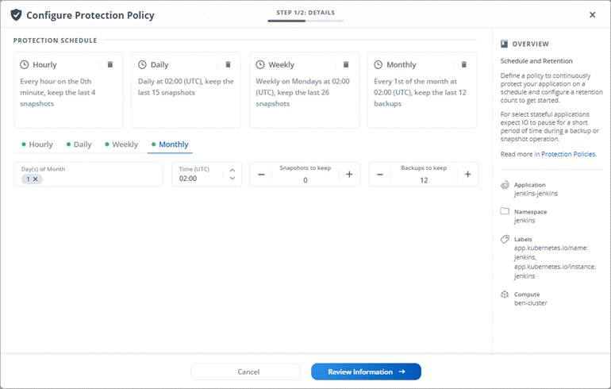

Amazon Web Services
Amazon Web Services
 Google Cloud
Google Cloud
 Microsoft Azure
Microsoft Azure
 Dokumentationsänderungen beantragen
Dokumentationsänderungen beantragen In GitHub bearbeiten
In GitHub bearbeiten Leitfaden für Beitragende
Leitfaden für BeitragendeWas ist neu bei Astra Control Service
Beitragende

NetApp aktualisiert regelmäßig den Astra Control Service, um Ihnen neue Funktionen, Verbesserungen und Fehlerbehebungen zu bieten.
22. November 2022
-
Unterstützung von Applikationen, die mehrere Namespaces umfassen
-
Unterstützung, um Cluster-Ressourcen in eine Applikationsdefinition zu enthalten
-
Verbesserte Fortschrittsberichte für Backup-, Restore- und Klonvorgänge
-
Unterstützung für das Management von Clustern, auf denen bereits eine kompatible Version von Astra Trident installiert ist
-
Unterstützung für das Managen mehrerer Cloud-Provider-Abonnements in einem einzigen Astra Control Service-Konto
-
Unterstützung für das Hinzufügen selbst verwalteter Kubernetes-Cluster zum Astra Control Service.
-
Die Abrechnung für den Astra Control Service erfolgt jetzt mit gemessene Namensräume anstatt je Applikation.
-
Unterstützung bei der Anmeldung zu den Term-basierten Angeboten des Astra Control Service über AWS Marketplace
7. September 2022
Diese Version umfasst Verbesserungen der Stabilität und Ausfallsicherheit in der Astra Control Service-Infrastruktur.
10. August 2022
Diese Version umfasst die folgenden neuen Funktionen und Verbesserungen.
-
Verbesserter Applikations-Management-Workflow verbesserte Workflows zum Applikations-Management sorgen für mehr Flexibilität bei der Definition von Applikationen, die von Astra Control gemanagt werden.
-
Erweiterte Testausführungshaken Zusätzlich zu den Testhooks für vor und nach dem Snapshot können Sie nun die folgenden Arten von Testsuiten konfigurieren:
-
Vor dem Backup
-
Nach dem Backup
-
Nach dem Wiederherstellen
Unter anderem unterstützt Astra Control jetzt auch die Verwendung desselben Skripts für mehrere Testausführungshaken.

Die von NetApp bereitgestellten Standard-Hooks für vor- und nach-Snapshot-Ausführung für bestimmte Applikationen wurden in dieser Version entfernt. Wenn Sie keine eigenen Testsuiten für Snapshots bereitstellen, erstellt der Astra Control Service absturzkonsistente Snapshots erst ab dem 4. August 2022. Besuchen Sie das "NetApp Verda GitHub Repository" Für Beispiel-Hook-Skripte, die Sie an Ihre Umgebung anpassen können.
-
-
Auswahl an Cloud-Providern während Sie die Dokumentation des Astra Control Service lesen, können Sie Ihren Cloud-Provider jetzt rechts oben auf der Seite auswählen. Sie erhalten die Dokumentation, die nur für den ausgewählten Cloud-Provider relevant ist.

26. April 2022
Diese Version umfasst die folgenden neuen Funktionen und Verbesserungen.
-
Namespace Role-Based Access Control (RBAC) Astra Control Service unterstützt jetzt das Zuweisen von Namespace-Einschränkungen für Mitglieder oder Viewer Benutzer.
-
Bucket Entfernung aus Astra Control Sie können jetzt einen Eimer aus Astra Control Service entfernen.
Bis 14. Dezember 2021
Diese Version umfasst die folgenden neuen Funktionen und Verbesserungen.
-
Neue Storage-Back-End-Optionen
-
In-Place-App-Wiederherstellung – durch Restore im selben Cluster und Namespace können Sie Snapshots, Klone oder Backups einer vorhandenen Applikation wiederherstellen.
-
Skriptereignisse mit Testausführungshaken Astra Control unterstützt benutzerdefinierte Skripte, die Sie vor oder nach dem Erstellen eines Snapshots einer Anwendung ausführen können. So können Sie Aufgaben wie das Aufstellen von Datenbanktransaktionen durchführen, so dass der Snapshot Ihrer Datenbank-App konsistent ist.
-
Vom Betreiber bereitgestellte Apps Astra Control unterstützt einige Apps, wenn sie mit Betreibern bereitgestellt werden.
5. August 2021
Diese Version umfasst die folgenden neuen Funktionen und Verbesserungen.
-
Astra Control Center Astra Control ist jetzt in einem neuen Implementierungsmodell verfügbar. Astra Control Center ist eine eigenständige Software, die Sie in Ihrem Datacenter installieren und betreiben können. Damit können Sie das Lifecycle Management von Kubernetes-Applikationen für lokale Kubernetes-Cluster managen.
Weitere Informationen "Gehen Sie zur Astra Control Center-Dokumentation".
-
Mit eigenem Bucket managen Sie jetzt die Buckets, die Astra für Backups und Klone verwendet, indem Sie zusätzliche Buckets hinzufügen. Außerdem können Sie durch Ändern des Standard-Buckets für die Kubernetes-Cluster bei Ihrem Cloud-Provider das Management übernehmen.
Juni 2021
Diese Version enthält Bugfixes und die folgenden Verbesserungen an der Google Cloud Unterstützung.
-
Unterstützung für freigegebene VPCs Sie können nun GKE-Cluster in GCP-Projekten mit einer gemeinsamen VPC-Netzwerkkonfiguration managen.
-
Persistente Volume-Größe für den CVS-Servicetyp Astra Control Service erstellt jetzt persistente Volumes mit einer Mindestgröße von 300 gib unter Verwendung des CVS-Servicetyps.
-
Unterstützung für Container-optimiertes OS Container-optimiertes OS wird jetzt mit GKE Worker-Knoten unterstützt. Dies ist zusätzlich zur Unterstützung für Ubuntu.
15. April 2021
Diese Version umfasst die folgenden neuen Funktionen und Verbesserungen.
-
REST API die Astra Control REST API ist jetzt zur Verwendung verfügbar. Die API basiert auf modernen Technologien und aktuellen Best Practices.
-
Jahresabonnement Astra Control Service bietet jetzt ein Premium-Abonnement.
Mit einem Jahresabonnement können Sie bis zu 10 Apps pro Anwendungspaket verwalten. Wenden Sie sich an den NetApp Sales, um so viele Pakete wie nötig zu erwerben. Beispielsweise können Sie 3 Pakete für das Management von 30 Applikationen über den Astra Control Service erwerben.
Wenn Sie mehr Applikationen verwalten als dies durch Ihr Jahresabonnement erlaubt ist, werden Ihnen die Gebühr in Höhe von 0.005 US-Dollar pro Minute und pro Applikation (entspricht Premium PAYGO) berechnet.
-
Namespace- und App-Visualisierung Wir haben die Seite „entdeckte Apps“ erweitert, um die Hierarchie zwischen Namespaces und Apps besser anzuzeigen. Erweitern Sie einfach einen Namespace, um die Applikationen in diesem Namespace zu sehen.

-
Verbesserungen an der Benutzeroberfläche die Assistenten für Datensicherung wurden verbessert und sorgen dadurch für eine höhere Benutzerfreundlichkeit. Zum Beispiel haben wir den Assistenten für Schutzrichtlinien überarbeitet, um den Schutzzeitplan einfacher anzuzeigen, wie Sie ihn definieren.

-
Verbesserungen bei der Aktivität Wir haben es einfacher gemacht, Details zu den Aktivitäten in Ihrem Astra Control Konto anzuzeigen.
-
Filtern Sie die Aktivitätsliste nach der verwalteten Anwendung, dem Schweregrad, dem Benutzer und dem Zeitbereich.
-
Laden Sie Ihre Astra Control Kontoaktivität in eine CSV-Datei herunter.
-
Zeigen Sie Aktivitäten direkt auf der Seite Cluster oder auf der Seite Apps an, nachdem Sie ein Cluster oder eine App ausgewählt haben.
-
März 2021
Der Astra Control Service unterstützt jetzt das "CVS Diensttyp" Mit Cloud Volumes Service für Google Cloud. Dies unterstützt zusätzlich bereits den Servicetyp CVS-Performance. Zur Erinnerung: Astra Control Service nutzt Cloud Volumes Service für Google Cloud als Storage-Backend für Ihre persistenten Volumes.
Dank dieser Verbesserung kann der Astra Control Service jetzt Applikationsdaten für Kubernetes-Cluster managen, die in any ausgeführt werden "Google Cloud-Region, in der Cloud Volumes Service unterstützt wird".
Wenn Sie die Flexibilität haben, zwischen Google Cloud Regionen auszuwählen, wählen Sie je nach Performance-Anforderungen entweder CVS oder CVS-Performance. "Erfahren Sie mehr über die Auswahl eines Servicetyps".
25 Januar 2021
Wir freuen uns, Ihnen mitteilen zu können, dass der Astra Control Service jetzt allgemein verfügbar ist. Wir haben eine Menge Feedback aus der Beta-Version erhalten und einige weitere bemerkenswerte Verbesserungen vorgenommen.
-
Die Abrechnung ist jetzt verfügbar, sodass Sie vom Freiplan zum Premium-Plan wechseln können. "Weitere Informationen zur Abrechnung".
-
Astra Control Service erstellt jetzt bei Verwendung des Servicetyps CVS-Performance persistente Volumes mit einer Mindestgröße von 100 gib.
-
Astra Control Service kann Apps jetzt schneller erkennen.
-
Sie können jetzt eigene Konten erstellen und löschen.
-
Wir haben bessere Benachrichtigungen, wenn der Astra Control Service nicht mehr auf einen Kubernetes Cluster zugreifen kann.
Diese Benachrichtigungen sind wichtig, da der Astra Control Service keine Apps für getrennte Cluster verwalten kann.
17. Dezember 2020 (Beta-Update)
Wir konzentrierten uns hauptsächlich auf die Fehlerbehebung, um Ihre Erfahrung zu verbessern, doch haben wir einige weitere bemerkenswerte Verbesserungen vorgenommen:
-
Wenn Sie Ihre ersten Kubernetes-Computing-Ressourcen zum Astra Control Service hinzufügen, wird der Objektspeicher jetzt in der Region erstellt, in der sich das Cluster befindet.
-
Details zu persistenten Volumes stehen jetzt zur Verfügung, wenn Sie Storage-Details auf Computing-Ebene anzeigen.

-
Wir haben eine Option hinzugefügt, um eine Anwendung aus einem vorhandenen Snapshot oder Backup wiederherzustellen.

-
Wenn Sie einen Kubernetes-Cluster löschen, den der Astra Control Service verwaltet, wird der Cluster jetzt in einem Status von removed angezeigt. Sie können dann das Cluster aus dem Astra Control Service entfernen.
-
Kontoinhaber können jetzt die zugewiesenen Rollen für andere Benutzer ändern.
-
Wir haben einen Abschnitt zur Abrechnung hinzugefügt, der aktiviert wird, wenn der Astra Control Service für allgemeine Verfügbarkeit (GA) veröffentlicht wird.